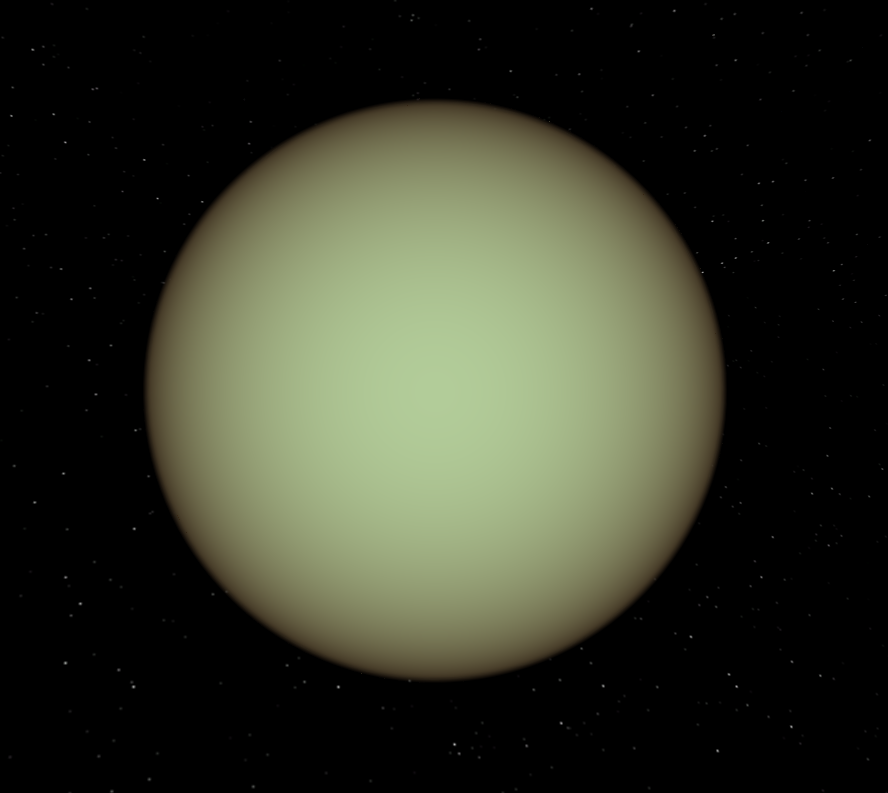

EL SISTEMA SOLAR
PRUEBA

La energía que recibimos del Sol se genera en su núcleo, donde tiene lugar la fusión nuclear. Allí, la presión y la temperatura son tan altas que los átomos de hidrógeno se fusionan en átomos de helio, liberando enormes cantidades de energía. La temperatura de esta parte del astro puede alcanzar más de 15 millones de grados centígrados.
La temperatura en la fotosfera es más fría, solo alcanza los 5.500 grados centígrados. Es aquí donde la radiación del Sol se detecta como luz visible. Las manchas solares en la fotosfera son más frías y oscuras que el área circundante. En el centro de las grandes manchas solares, la temperatura puede ser más baja, se calcula que unos 4.000 grados.

Con un radio de 2.440 kilómetros, Mercurio tiene un poco más de un tercio del ancho de la Tierra. Por lo que, si la Tierra fuera del tamaño de una moneda de cinco céntimos, Mercurio sería del tamaño de un arándano. Desde una distancia promedio de 58 millones de kilómetros, la más cercana al Sol, Mercurio está a 0,4 unidades astronómicas (AU), la distancia del Sol a la Tierra, del Sol. Desde esta distancia, la luz solar tarda 3,2 minutos en viajar del Sol a Mercurio y debido a ello la mayoría imaginamos que la temperatura en su superficie tendría que ser la más alta de nuestro sistema, pero eso no es así, ya que el planeta más caliente del sistema solar es Venus.

VENUS
De los planetas del Sistema Solar, Venus tiene una particularidad. Todos los planetas giran de
este a oeste, excepto el segundo más cercano al Sol. Venus gira sobre sí mismo de oeste a este, y en
realidad, no debería hacerlo así. Un nuevo estudio sostiene que el motivo del giro invertido es su
poderosa atmósfera.
De los planetas del Sistema Solar, Venus tiene una particularidad. Todos los planetas giran de
este a oeste, excepto el segundo más cercano al Sol. Venus gira sobre sí mismo de oeste a este, y en
realidad, no debería hacerlo así. Un nuevo estudio sostiene que el motivo del giro invertido es su
poderosa atmósfera.

TIERRA
La Tierra orbita alrededor del Sol, la estrella que provee el nivel de luz y calor ideales
para la vida. En términos básicos, el planeta experimenta dos movimientos: rotación y
traslación. El primero es efectuado alrededor del eje polar en el sentido contrario al de las
manecillas del reloj, es decir, de oeste a este. El movimiento de traslación es el que realiza
alrededor del Sol en una órbita casi circular.
Un día en la Tierra tiene una duración de 24 horas, pero si se trata de ser muy específicos,
la NASA estima esta duración en 23.934 horas o 0.99726968 días terrestres. Esto es el período
de rotación sideral. Ahora bien, 1 año terrestre dura 365.26 días, el tiempo que tarda en
recorrer una órbita completa alrededor del Sol.
Los movimientos de la Tierra y las condiciones en que se encuentra en el Sistema Solar inciden
en una serie de fenómenos increíbles y naturales: erupciones volcánicas, tormentas,
terremotos, estaciones, eclipses, mareas y muchas más. Es un planeta tremendamente activo y en
constante cambio.

MARTE
Marte puede dividirse internamente en tres capas: el núcleo, el manto y la corteza.
No se tienen datos precisos sobre el espesor de cada una de estas capas pero sí que
existen algunas estimaciones basadas en parámetros del planeta que se pueden medir.
Por ejemplo, a partir de las dimensiones de los valles y volcanes en su superficie se ha
podido estimar que su corteza tiene un espesor de entre 10 y 50 kilómetros. Los elementos
que pueden encontrarse en la corteza de Marte incluyen hierro, aluminio, magnesio, calcio
y potasio.
Actualmente se cree que el núcleo de Marte tiene un radio de entre 1500 y 2100 kilómetros
y que contiene principalmente hierro, níquel y azufre. A su alrededor hay un manto de
entre 1200 y 1800 kilómetros de espesor.
En Marte pueden encontrarse algunos de los accidentes geográficos más impresionantes del
sistema solar. Por ejemplo, cerca de su ecuador puede encontrarse el Valles Marineris, el
cañón más grande del sistema solar. Este cañón se extiende a lo largo de 4000 km, llega en
algunos de sus puntos a los 700 km de anchura y hasta una profundidad de 7 km. Por
comparación, el Gran Cañón del Colorado tiene aproximadamente 450 de longitud, una
amplitud máximo de 29 km y una profundidad de 800 m.
Además, Marte también tiene la montaña más alta del sistema solar, conocida como Monte
Olimpo. El Monte Olimpo de Marte es un volcán de casi 22 km de altitud y más de 600 km de
diámetro. Por comparación, el Everest tiene una altitud ligeramente inferior a los 9
kilómetros.

JUPITER
Estructura y superficie
Es el planeta más grande de nuestro sistema solar.
Es un gigante hecho de gas: sobre todo de hidrógeno y helio.
Tiene una atmósfera muy densa.
Tiene anillos, pero son muy difíciles de ver.
lunas
Tiene 79 lunas confirmadas.
Es el quinto planeta contando desde el Sol, así que tiene a Marte y a Saturno por
vecinos

SATURNO
Aunque todos los planetas gaseosos poseen anillos, ninguno los tiene tan
impresionantes como Saturno. Es el sistema de anillos más complejo de todos y se
extiende a través de cientos de miles de kilómetros. De acuerdo con la NASA, son 7
en total y cada uno tiene un grosor de aproximadamente 1 kilómetro. Están
compuestos por millones de partículas de polvo de hielo.
Estructura de Saturno
Carece de superficie sólida. Está compuesto principalmente por hidrógeno y helio y
su interior es posiblemente similar al de Júpiter, con un núcleo denso de roca,
hielo, agua y otros compuestos sólidos. Está rodeado de hidrógeno metálico líquido
dentro de otra capa de hidrógeno líquido. Su campo magnético es 578 veces más
potente que el de la Tierra.
La atmósfera de Saturno
Está compuesta por un 97 por ciento de hidrógeno, un 3 por ciento de helio y un
0.05 por ciento de metano. Se presentan fuertes vientos en la alta atmósfera que
alcanzan hasta 500 m/s en la región ecuatorial. En conjunción con el calor que
sube desde el interior del planeta, causan que las franjas amarillas del planeta
sean visibles en la atmósfera.
Saturno, sus anillos y varios de sus satélites se circunscriben dentro de una
magnetosfera.

URANO
Es un planeta gaseoso con una gran cantidad de metano en su superficie, lo
que le confiere un tono azulado. Su principal característica es que su eje de
rotación está inclinado de forma casi paralela a su plano orbital (unos 8°),
por lo que la línea del ecuador está en un ángulo casi recto respecto a su
órbita. Además, el Sol recorre el cielo de modo que pasa casi por los polos y
así cada hemisferio permanece sin luz solar alrededor de la mitad del año de
este planeta.
Estructura de Urano
Los vientos en Urano alcanzan 900 kilómetros por hora.
Urano está constituido por un núcleo de roca, un manto helado y una capa
exterior gaseosa. Carece de una superficie sólida. El 80 por ciento (puede ser
más) de su masa está compuesto de un fluido denso y caliente de materiales de
hielo (agua, amoníaco y metano) que está encima del núcleo rocoso. Debido a la
similitud de su composición interna con Neptuno, los científicos se refieren a
ambos planetas como “los gigantes de hielo”.
Su eje magnético está inclinado casi 60° desde su eje de rotación y desplazado
del centro del planeta en una tercera parte de su radio.
La atmósfera de Urano
La atmósfera de este planeta se constituye de hidrógeno en un 83 por ciento,
helio en un 15 por ciento y metano en un 2 por ciento. También contiene trazas
de agua y amoníaco. Está estructurada en capas de nubes; al parecer, el agua
forma las nubes inferiores y el metano forma la capa más superficial de las
nubes. Los vientos en Urano alcanzan 900 kilómetros por hora.
El metano de esta atmósfera es lo que permite apreciar el color de su
superficie. Como la luz solar pasa a través de la atmósfera y se refleja por
encima de las nubes, el metano absorbe la parte roja de la luz (solar), por lo
que visto desde un telescopio se ve azul verdoso.
Su atmósfera es la más fría de todo el Sistema Solar.

NEPTUNO
Satélites y anillos de Neptuno
Hasta ahora, Neptuno posee 13 lunas o satélites
Galatea, Larisa, Proteo, Tritón, Nereida, Despina, Thalassa, Náyade,
Halímedes, Sao, Psámate, Neso y Laomedeia. El satélite más grande es
Tritón, que orbita Neptuno en la dirección contraria a la de la rotación
del planeta. Es una luna muy fría, de delgada atmósfera y con géiseres que
lanzan material helado.
tiene anillos muy dificiles de ver
Aunque no son vistos fácilmente, 6 tenues anillos rodean a Neptuno. No son
uniformes, pero tienen 4 arcos constituidos por aglutinamiento de polvo.
Los tres anillos principales son el anillo Adams, el anillo Le Verrier y
el Anillo Galle.
Estructura de Neptuno
La estructura interna de Neptuno está compuesta mayormente por hielo y
roca. Probablemente tiene un núcleo pesado y sólido de tamaño similar al
de la Tierra, con temperaturas de miles de grados centígrados.
No posee una superficie sólida. Es el más denso de todos los planetas
gaseosos pero es menos denso que la Tierra. Su campo magnético es unas 27
veces más potente que el de nuestro planeta.
La atmósfera de Neptuno
Neptuno tiene una atmósfera compuesta por un 74 por ciento de hidrógeno,
25 por ciento de helio y 1 por ciento de metano. Su atmósfera se extiende
a grandes profundidades y dado su contenido en metano, el planeta es
llamado “gigante de hielo”, al igual que Urano. No obstante, el color
azulado de Neptuno es aún más intenso y brillante.
Es azotado por vientos supersónicos: se estima que son 3 veces más fuertes
que los de Júpiter y 9 veces más intensos que los de la Tierra. En 1989 la
nave Voyager 2 descubrió una tormenta oscura en el hemisferio sur,
denominada la Gran Mancha Oscura, rodeada por un sistema de nubes blancas
en movimiento y de dimensiones similares a las de la Tierra.
La Tierra orbita alrededor del Sol, la estrella que provee el nivel de luz y calor ideales para la vida. En términos básicos, el planeta experimenta dos movimientos: rotación y traslación. El primero es efectuado alrededor del eje polar en el sentido contrario al de las manecillas del reloj, es decir, de oeste a este. El movimiento de traslación es el que realiza alrededor del Sol en una órbita casi circular. Un día en la Tierra tiene una duración de 24 horas, pero si se trata de ser muy específicos, la NASA estima esta duración en 23.934 horas o 0.99726968 días terrestres. Esto es el período de rotación sideral. Ahora bien, 1 año terrestre dura 365.26 días, el tiempo que tarda en recorrer una órbita completa alrededor del Sol. Los movimientos de la Tierra y las condiciones en que se encuentra en el Sistema Solar inciden en una serie de fenómenos increíbles y naturales: erupciones volcánicas, tormentas, terremotos, estaciones, eclipses, mareas y muchas más. Es un planeta tremendamente activo y en constante cambio.
Marte puede dividirse internamente en tres capas: el núcleo, el manto y la corteza. No se tienen datos precisos sobre el espesor de cada una de estas capas pero sí que existen algunas estimaciones basadas en parámetros del planeta que se pueden medir. Por ejemplo, a partir de las dimensiones de los valles y volcanes en su superficie se ha podido estimar que su corteza tiene un espesor de entre 10 y 50 kilómetros. Los elementos que pueden encontrarse en la corteza de Marte incluyen hierro, aluminio, magnesio, calcio y potasio. Actualmente se cree que el núcleo de Marte tiene un radio de entre 1500 y 2100 kilómetros y que contiene principalmente hierro, níquel y azufre. A su alrededor hay un manto de entre 1200 y 1800 kilómetros de espesor. En Marte pueden encontrarse algunos de los accidentes geográficos más impresionantes del sistema solar. Por ejemplo, cerca de su ecuador puede encontrarse el Valles Marineris, el cañón más grande del sistema solar. Este cañón se extiende a lo largo de 4000 km, llega en algunos de sus puntos a los 700 km de anchura y hasta una profundidad de 7 km. Por comparación, el Gran Cañón del Colorado tiene aproximadamente 450 de longitud, una amplitud máximo de 29 km y una profundidad de 800 m. Además, Marte también tiene la montaña más alta del sistema solar, conocida como Monte Olimpo. El Monte Olimpo de Marte es un volcán de casi 22 km de altitud y más de 600 km de diámetro. Por comparación, el Everest tiene una altitud ligeramente inferior a los 9 kilómetros.
Estructura y superficie Es el planeta más grande de nuestro sistema solar. Es un gigante hecho de gas: sobre todo de hidrógeno y helio. Tiene una atmósfera muy densa. Tiene anillos, pero son muy difíciles de ver. lunas Tiene 79 lunas confirmadas. Es el quinto planeta contando desde el Sol, así que tiene a Marte y a Saturno por vecinos
Aunque todos los planetas gaseosos poseen anillos, ninguno los tiene tan impresionantes como Saturno. Es el sistema de anillos más complejo de todos y se extiende a través de cientos de miles de kilómetros. De acuerdo con la NASA, son 7 en total y cada uno tiene un grosor de aproximadamente 1 kilómetro. Están compuestos por millones de partículas de polvo de hielo.
Estructura de Saturno Carece de superficie sólida. Está compuesto principalmente por hidrógeno y helio y su interior es posiblemente similar al de Júpiter, con un núcleo denso de roca, hielo, agua y otros compuestos sólidos. Está rodeado de hidrógeno metálico líquido dentro de otra capa de hidrógeno líquido. Su campo magnético es 578 veces más potente que el de la Tierra. La atmósfera de Saturno Está compuesta por un 97 por ciento de hidrógeno, un 3 por ciento de helio y un 0.05 por ciento de metano. Se presentan fuertes vientos en la alta atmósfera que alcanzan hasta 500 m/s en la región ecuatorial. En conjunción con el calor que sube desde el interior del planeta, causan que las franjas amarillas del planeta sean visibles en la atmósfera. Saturno, sus anillos y varios de sus satélites se circunscriben dentro de una magnetosfera.
Es un planeta gaseoso con una gran cantidad de metano en su superficie, lo que le confiere un tono azulado. Su principal característica es que su eje de rotación está inclinado de forma casi paralela a su plano orbital (unos 8°), por lo que la línea del ecuador está en un ángulo casi recto respecto a su órbita. Además, el Sol recorre el cielo de modo que pasa casi por los polos y así cada hemisferio permanece sin luz solar alrededor de la mitad del año de este planeta. Estructura de Urano Los vientos en Urano alcanzan 900 kilómetros por hora. Urano está constituido por un núcleo de roca, un manto helado y una capa exterior gaseosa. Carece de una superficie sólida. El 80 por ciento (puede ser más) de su masa está compuesto de un fluido denso y caliente de materiales de hielo (agua, amoníaco y metano) que está encima del núcleo rocoso. Debido a la similitud de su composición interna con Neptuno, los científicos se refieren a ambos planetas como “los gigantes de hielo”. Su eje magnético está inclinado casi 60° desde su eje de rotación y desplazado del centro del planeta en una tercera parte de su radio. La atmósfera de Urano La atmósfera de este planeta se constituye de hidrógeno en un 83 por ciento, helio en un 15 por ciento y metano en un 2 por ciento. También contiene trazas de agua y amoníaco. Está estructurada en capas de nubes; al parecer, el agua forma las nubes inferiores y el metano forma la capa más superficial de las nubes. Los vientos en Urano alcanzan 900 kilómetros por hora. El metano de esta atmósfera es lo que permite apreciar el color de su superficie. Como la luz solar pasa a través de la atmósfera y se refleja por encima de las nubes, el metano absorbe la parte roja de la luz (solar), por lo que visto desde un telescopio se ve azul verdoso. Su atmósfera es la más fría de todo el Sistema Solar.